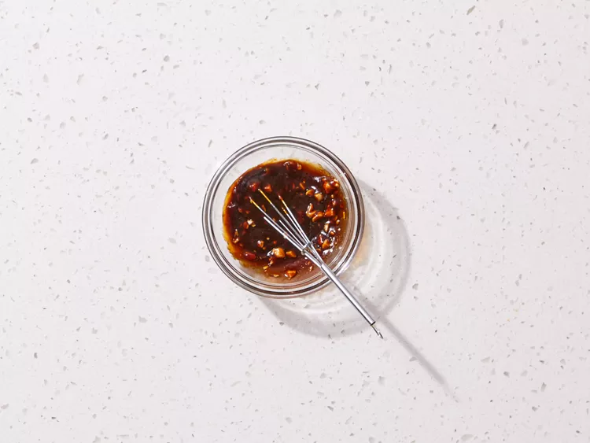

Home
Vietnamese Fresh Spring Rolls
Vietnamese springs rolls are fresh, light rolls made with rice paper, and filled with ingredients like
shrimp, pork, vermicelli noodles, and crisp vegetables. They're usually served with hoisin-peanut sauce or fish sauce.

Photo by Allrecipes/Qi Ai
Ingredients
- 2 ounces rice vermicelli noodles
- 8 rice wrappers (8.5 inch diameter)
- 8 large cooked shrimp - peeled, deveined and cut in half
- 2 leaves lettuce, chopped
- 3 tablespoons chopped fresh mint leaves
- 3 tablespoons chopped fresh cilantro
- 1 ⅓ tablespoons chopped fresh Thai basil
Sauces
- ¼ cup water
- 2 tablespoons fresh lime juice
- 2 tablespoons white sugar
- 4 teaspoons fish sauce
- 1 clove garlic, minced
- ½ teaspoon garlic chili sauce
- 3 tablespoons hoisin sauce
- 1 teaspoon finely chopped peanuts
Directions
- Gather all ingredients.
Photos by Dotdash Meredith Food Studios
- Fill a large pot with lightly salted water and bring to a rolling boil; stir in noodles and return to a boil. Cook noodles uncovered, stirring occasionally, until tender yet firm to the bite, 3 to 5 minutes; drain and set aside to cool.
- Fill a large bowl with warm water. Dip one wrapper into the hot water for 1 second to soften.
- Lay wrapper flat; place 2 shrimp halves in a row across the center, add some cooled noodles, lettuce, mint, cilantro, and basil, leaving about 2 inches uncovered on each side.
- Fold uncovered sides inward, then tightly roll the wrapper, beginning at the end with lettuce. Repeat with remaining ingredients.
- To make the chili sauce for dipping: Mix water, lime juice, sugar, fish sauce, garlic, and chili sauce in a small bowl until well combined.
- To make the second sauce for dipping: Mix hoisin sauce and peanuts in a separate small bowl.

- Serve spring rolls with the two sauce mixtures.